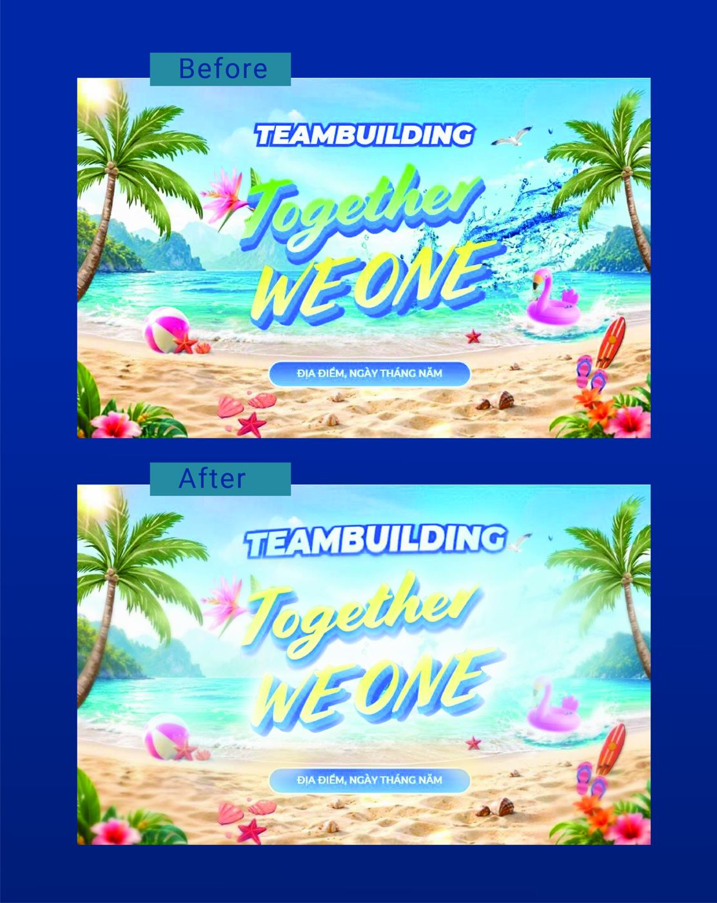

Vừa gửi file bị chê, hỏi GPT cũng chỉ nói chung chung? Gửi file cho tui — soi đúng 18 bước, chỉ thẳng bạn đang sai ở bước mấy, sửa được liền. Trả lời bằng văn bản chi tiết, không phải một câu nhận xét cho có.
159.000đ
Một file layout · Soi bằng văn bản chi tiết theo đúng 18 bước · Có kết quả trong 24h
Đúng nhất là mấy trường hợp này:
Không cần chuẩn bị gì cầu kỳ. Gửi đúng file bạn đang vướng, tui soi trên đúng thứ thật, không phải ví dụ chung chung.
Đi đúng thứ tự, không nhảy cóc — nền móng hỏng thì thẩm mỹ đẹp cỡ nào cũng không cứu được.
Phần I — Ảnh sản phẩm (nếu layout có ảnh chụp/render)Không phải file nào cũng dính đủ 18 bước. Dính chỗ nào, tui nói rõ chỗ đó — kèm cách sửa cụ thể, không nói chung chung như hỏi GPT.
Không phải một câu nhận xét chung chung. Sai đúng Bước mấy, nặng nhẹ ra sao, sửa cái nào trước.
Không nói "cần cân đối hơn" kiểu AI. Nói rõ chỗ nào cần kéo, cần đổi, vì sao làm vậy.
Nếu file đem in/gia công sẽ hỏng, tui chỉ ra trước khi bạn tốn tiền chạy hàng.
Không còn cảnh gửi lại vẫn bị chê tiếp vì không biết vướng ở đâu.
Soi không chỉ ra đúng lỗi thật của file — hoàn tiền 100%.
Trước: tiêu đề "Together WE ONE" bị chẻ 2 màu (xanh lá + vàng) trên cùng 1 câu, lại thêm hiệu ứng nước bắn to phía sau chữ — mắt không biết nhìn vào đâu trước.
Va (soi ra): dính Bước 9 — Dọn rác chi tiết (hiệu ứng nước không phục vụ thông điệp, chỉ làm rối) và Bước 12 — Bảng màu (2 màu trên 1 câu tiêu đề phá vỡ tính nhất quán).
Sau: gộp tiêu đề về 1 tông vàng xuyên suốt, bỏ hiệu ứng thừa — chữ rõ hơn, mắt đọc trọn câu không bị chẻ ngang.

Case thật đã soi cho khách — không phải ảnh minh họa.
Trước (khách chê): quá nhiều chi tiết cạnh tranh nhau — loa phóng thanh nổ, confetti, badge tròn "50% OFF", chữ chạy nghiêng — mắt không biết đậu vào đâu, không có điểm nhấn chính. Logo cũng thiếu dòng định vị thương hiệu.
Va (soi ra): dính Bước 6 — Điểm nhấn chính (không có tâm điểm rõ ràng), Bước 9 — Dọn rác chi tiết (loa, confetti, đường trang trí không phục vụ thông điệp), Bước 11 — Phân cấp chữ (mọi chữ cùng hét lên một lúc), và Bước 14 — Nhất quán bộ nhận diện (logo thiếu tagline định vị).
Sau (khách chốt): bỏ hết chi tiết thừa, đẩy "50%++" thành điểm nhấn duy nhất, phân cấp lại chữ theo thứ tự đọc rõ ràng, thêm tagline "Dụng cụ nhà bếp cao cấp" dưới logo — cùng 1 thông điệp, nhưng khách chốt đơn thay vì chê.
Case thật — cùng nội dung, sửa đúng theo 18 Bước thì khách từ chê chuyển sang chốt.
Khác gì so với hỏi GPT chê layout?
GPT không biết thực tế sản xuất (bleed, CMYK, chất liệu in ra lệch màu thế nào), và chỉ chê chung chung. Tui soi trên đúng file thật, chỉ đúng bước sai, có cách sửa cụ thể.
Đây có phải soi trực tiếp qua màn hình như gói 10 Bước không?
Không. Đây là bản soi bằng văn bản, nhận trong 24h. Muốn soi trực tiếp 1:1 qua màn hình thì có gói 10 Bước riêng.
159.000đ là soi được mấy file?
Một file. Nếu là một bộ nhiều thành phần thì nhắn tui, mình tính lại cho hợp lý.
Đây có phải khóa học không?
Không. Đây là soi một file, xong là xong. Muốn tự soi được mọi file sau này thì có khóa dạy phương pháp riêng.
Nếu soi không đúng thì sao?
Hoàn tiền 100%.
Nói tui biết: file này làm cho ai, dùng ở đâu, và bạn đang thấy vướng chỗ nào.
Chưa biết vướng ở đâu cũng không sao — đó là việc của tui.
Nhắn Zalo Tui — 0908.366.024Tui trả lời trực tiếp. Không sale, không qua tư vấn viên.